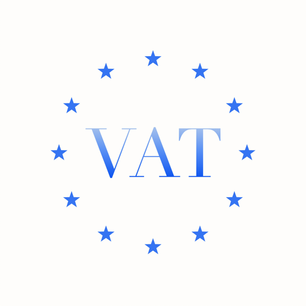
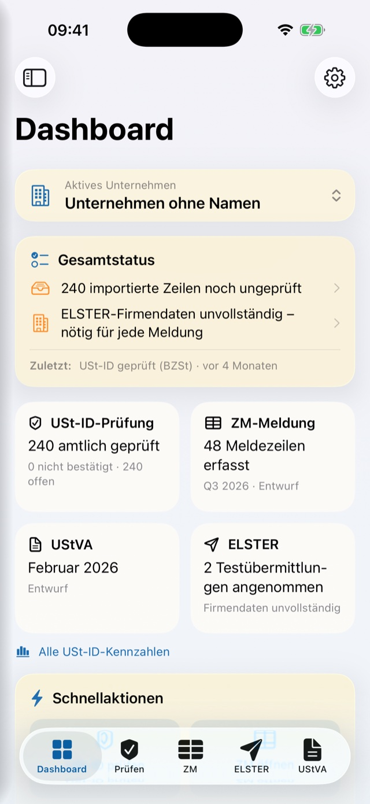

DiamVAT
Check VAT numbers, prove it, report it.
DiamVAT is the native German VAT app for iPhone, iPad and Mac. It checks USt-IdNrn. (VAT identification numbers) through the official interfaces of the Bundeszentralamt für Steuern (BZSt, the German Federal Central Tax Office) and the EU database VIES. Every check is documented as an archivable PDF record. The Zusammenfassende Meldung (EC Sales List), Umsatzsteuer-Voranmeldung (advance VAT return), Dauerfristverlängerung (permanent filing extension) and Jahreserklärung (annual VAT return) are prepared right up to the ELSTER submission on the Mac – in this version solely as a test submission to the tax administration’s test system. Written for sole traders, small businesses, qualified agents and tax advisers.
Check it, don't guess it
DiamVAT queries your EU business partner's USt-IdNr. through the official interface of the Bundeszentralamt für Steuern under section 18e no. 1 UStG (the German VAT Act) – simple or qualified. The answer arrives within seconds, in plain language, and carries the official time of the request rather than your device's clock. German numbers are not answered by the BZSt at all. Those go through VIES at the European Commission and are visibly labelled as a VIES confirmation that is not official.
- Qualified confirmation: company name and address are assessed field by field – matches, differs, was not asked for, or was not supplied by the member state.
- That field-level comparison is the usual evidence of commercial diligence for the good-faith protection under section 6a(4) UStG. DiamVAT does not merely display it; it writes the whole of it into the PDF record.
- An attempt that was cancelled or failed for technical reasons never ends up in the record as “invalid”. Every failure gets its own status code (offline, cancelled, network or server error).
- Paste a number from text or read it off a photo of an invoice. Text recognition runs entirely on the device, and the image is never stored.
The record that counts with the tax office
Every check produces a PDF record containing everything an auditor wants to see: your own and the checked USt-IdNr., the official time of the check, the type of check, the result, the technical status code and the request ID. Batch runs get a multi-page report. It includes a separate section for every row that was never queried at all, with the reason spelled out. That way the arithmetic adds up: imported = documented + not checked.
- The check archive can be filtered by status and searched by number, company name and reference; one tap opens the stored individual record.
- Export as a multi-page PDF report and as CSV for reconciliation with your bookkeeping.
- The app never deletes anything of its own accord and has no automatic clear-out of old checks (sections 147 AO and 14b UStG). Deleting stays expressly your decision.
- The check records are archivable. Audit-proof in the strict sense are only the submission records, which survive even a “delete all local data”.
Hundreds in one go
Hand over the export from your bookkeeping as a CSV, text or Excel file. DiamVAT recognises the columns and proposes the mapping – nothing is imported automatically, you confirm the preview. The check then works through the rows one by one, deliberately one request at a time rather than in parallel, because parallel requests over a mobile connection returned false “invalid” answers in field testing.
- Every “invalid” is automatically checked a second time before it is allowed to stand in the record.
- Progress is visible, and each row carries its own result.
- Rows that were not queried do not simply disappear: they appear in the report with the reason why.
Prepare your returns, down to the individual code
The Zusammenfassende Meldung, Umsatzsteuer-Voranmeldung, Dauerfristverlängerung and Jahreserklärung all follow the official forms. The maths happens in the app, not on a scrap of paper beside it.
With the country rules of section 18a UStG built in
Enter reporting lines or take them from an import – DiamVAT knows the rules. German numbers do not belong in the Zusammenfassende Meldung, nor do non-EU numbers, and Northern Ireland (XI) counts for goods only. Lines that do not qualify are never deleted. They are visibly marked as “do not report” and can be brought back at any time. At the end you get a CSV in the ELSTER import format.
- The year grid shows the quarters with their three months alongside and the calendar year below; the rare two-month supplementary periods can be shown when you need them – 21 official reporting periods in all.
- What you may already file is tappable; what is still running carries a clock; what has not yet begun carries a padlock and, when tapped, the reason.
- The deadline – the 25th day after the period ends – sits right beside it, together with the reminder that a Dauerfristverlängerung does not apply to the Zusammenfassende Meldung.
- First and amended returns, monthly reporting under section 18a(1) sentence 2 with its coupling check, and the €50,000 threshold are all covered.
On the official form USt 1 A
The advance return follows the official form, with all 50 codes across eleven sections – each with its official number and an explanation. DiamVAT does the tax itself: the tax amount appears immediately below each taxable amount, the remaining prepayment always stays at the top, and the full calculation can be opened. Whenever you like, you can view the completed return as a three-page PDF of the official form.
- Checking starts as you type. Does the tax match the rate? Is the taxable amount missing for a tax figure? Is an amount negative where the authorities require none?
- For intra-community acquisitions and reverse-charge services under section 13b, the app proposes the corresponding input tax – as a suggestion you can overwrite; after that the automation never touches your entry again.
- Each tax year gets what is officially provided for it – code 23 up to 2025, for instance, and code 500 from 2026.
Dauerfristverlängerung
The application on the official form USt 1 H (sections 46–48 UStDV) has an area of its own. Quarterly filers submit the plain application; for monthly filers the app works out the special prepayment – one eleventh, rounded down.
Jahreserklärung
Form USt 2 A with all sections A to K for the 2025 and 2026 tax years, plus schedule UN and schedule FV for fiscal representatives. As a PDF of the official form: six pages of the main form, with each schedule in use on a page of its own.
Carry over the advance returns
If you wish, the year's figures from your draft advance returns move into the annual return – with a per-line preview before anything is written. Codes with no unambiguous target are expressly flagged as manual work.
The small-business scheme, section 19 UStG
If you report turnover under section 19(1) UStG, a whole set of fields must stay empty. DiamVAT applies eight official rules for this and the €100,000 threshold – as pure value logic, so it works on iPhone and iPad without a Mac.
Objections in plain language
Every objection raised by the check becomes a card of its own, with its weight, the point it concerns and the official wording. One tap jumps straight to the section of the form, to the company data or to the period.
Your own EC Sales List import
The Zusammenfassende Meldung has a second import route that you set up once for your bookkeeping's column names and service-type codes. The preview deliberately shows faulty rows too, so that a data-entry error cannot quietly vanish.
To ELSTER on the Mac – in test mode
The Mac app links the tax administration's official ERiC interface (version 44.2.4.0). Its built-in check raises objections to your return in exactly the words the acceptance server would later use, without any network contact at all. Important, and said plainly: in this version transmission goes solely to the tax administration’s test system – filing with legal effect is deliberately not possible. All four types of return have in fact been transmitted this way to the test system and accepted there.
- Before sending, the app reads back the string that will actually be transmitted and asks you to type a confirmation word.
- The ELSTER certificate (.pfx) is checked for authenticity and PIN as you store it, and the holder and validity are displayed. The PIN stays on that device behind Face ID or Touch ID; the certificate file itself deliberately travels through the iCloud keychain.
- Every accepted submission files a record: date of sending, recipient, period, certificate, manufacturer ID, transfer ticket, the figures from the XML that was sent, and the server's reply – as a PDF. It survives deleting the draft just as it survives “delete all local data”.
- The tax administration's legal notes – the document on Articles 12 to 14 GDPR, the data protection notice verbatim, the note that log files stay on your device, and the recommendation to keep backups – are shown and acknowledged before first use, with the date and document version, and remain available at any time.
- For the Wirtschafts-Identifikationsnummer (the German business identification number), the app automatically strips off the five-digit distinguishing feature, because the official fields accept only DE plus nine digits.
- iPhone and iPad
- iOS or iPadOS 26: enter, calculate, pre-check and produce PDFs of the official forms. Drafts travel to the Mac through iCloud.
- Mac
- macOS 26: additionally the official check and the transmission – in this version solely as a test submission to the tax administration’s test system.
- Why the Mac only
- The tax administration's ERiC interface exists for desktop systems only; it is not offered for iOS or iPadOS.
- What you need to bring
- Your own ELSTER certificate (.pfx) and its PIN. The manufacturer ID is built into the product, so there is nothing for you to enter.
- Language
- The interface is in German.
Several companies, one overview
Create as many companies as you need, each with its own USt-IdNr., tax number, legal form, short name and notes. The active company determines what the app shows: check history, imports, EC Sales List rows, advance returns and annual returns always belong to it. You switch at the top of the dashboard or in the sidebar.
- The dashboard is the first thing you see: seven figure tiles, quick actions, open notes, the most recent checks and imports, and the state of the Zusammenfassende Meldung. “Officially checked” deliberately excludes the VIES answers.
- The tiles are built from count queries, so the view opens just as quickly with 5,000 records in the archive as with 500.
- You type the tax number exactly as it appears on your assessment; DiamVAT converts it into the 13-digit ELSTER format – confirmed for all 16 federal states. The app also names the tax office, drawing on the official directory of 746 offices.
- The same USt-IdNr. on two companies is reported as an error and blocks submission: two companies cannot file under one VAT number.

The way you like it
DiamVAT shares the design layer of all DiamApps – and the result badges stay fully legible throughout.
Backgrounds
Six deliberately understated backgrounds ship with the app – misty blue, diamond, paper, graphite, sage, horizon – or use a photo of your own. Apply one to every area at once, or give the dashboard, checking, EC Sales List and ELSTER areas their own, each with its own opacity slider (0.25 by default).
Type per area
Six typefaces, from San Francisco through New York and Charter to Georgia and Palatino, plus title and body size – adjustable per area, with a live preview.
Colours and cards
Seven accent colours from deep blue to graphite, seven card tints, a transparency slider, text opacity and a corner radius from crisp to round – the preview above them changes as you go.
Light, dark or system
Appearance follows the system or stays fixed. Result badges and forms remain fully legible throughout, however transparent you like it.
Six app icons
Diamond, ruby, sapphire, emerald, gold or silver – all generated pixel for pixel from the same artwork, with only the gemstone colour changing. The choice deliberately stays a setting of that one device.
Arrange everything
Which cards sit on the dashboard, which two to five areas occupy the tab bar, how the sidebar is structured – right down to the order of the four draft cards in the ELSTER hub. Areas you take out remain reachable from the sidebar, and every arrangement travels with you through iCloud.
Your data stays yours
Check history, imports, EC Sales List rows, drafts, companies and your design and navigation settings sync between your devices through your own private iCloud account – encrypted at Apple, without a single server of ours. Import a file on the Mac, start the check on the iPhone: the same state everywhere.
Consent before syncing
When you switch it on, the app states plainly that sensitive company data travels too, and waits for your consent. The change takes effect after you restart the app.
Deliberately device-local
Left behind: the app icon, the certificate PIN, the active company and the selected reporting period – a period arriving from another device would silently relabel work in progress.
Diagnostics without disclosure
The local diagnostic log shows status, response code, duration and transport errors. Sharing has a route of its own that masks the VAT numbers – intended for professionals bound by confidentiality under section 203 StGB (the German Criminal Code).
More detail
Small things that make the difference day to day.
Compliance timeline
Checks, imports, draft EC Sales Lists and advance returns, and every accepted test submission come together in one timeline, with filters and search. The timeline is a working overview – the records you can rely on remain the check archive and the submission records.
One job, one entry
A batch check appears in the timeline as a single job with accurate counters; one tap opens the stored individual record.
CSV, properly built
The CSV export follows RFC 4180 – separators, quotation marks and line breaks inside fields are handled correctly, so your bookkeeping reads the file without any rework.
Guides and two recordings
Eight step-by-step guides, from a simple check to a finished EC Sales List, including the question of which reporting period actually applies to you. Alongside them, two genuine screen recordings from the app, each under a minute, with no autoplay and no network connection.
Sample data for demonstrations
The dashboard, timeline, import and EC Sales List can be viewed with sample data instead of real client data – reachable only through Settings and Developer, so that sample data can never mix in among real checks.
On the large screen
The Mac has a proper system sidebar with real content targets rather than pages to leaf through. On iPad and Mac, the advance return and the annual return put the sections on the left and the form on the right.
One certificate per company
All four types of return work with the same active certificate; each company can additionally have a preferred certificate on file.
EC Sales List drafts as snapshots
A draft freezes the aggregated lines as they stood when it was created, so several states of one quarter can exist side by side.
Archive rather than delete
A company is never deleted, only archived – with all its records, and restorable at any time.
Legal notes
DiamVAT is a software tool for checking and preparing data. It does not provide assistance in tax matters within the meaning of the German Tax Advisory Act (Steuerberatungsgesetz) and is no substitute for tax advice. Responsibility for the accuracy and completeness of the data entered and transmitted remains with the user.
ELSTER is a trademark of the Free State of Bavaria. DiamVAT is an independent product with no connection to the German tax administration; ELSTER is named solely to indicate suitability for use with it.
In this build, transmission to the tax administration is possible only as a test submission to the test system. DiamVAT cannot, in this version file a return with legal effect and therefore cannot meet a filing deadline for you.
A qualified confirmation under section 18e UStG is no blanket protection from liability either: it documents the authority's answer at a particular point in time, no more than that. Whether a supply is exempt is decided by the facts, not by the query.
This English page is a translation provided for convenience. In case of doubt, the German version of this page prevails; the statutory provisions cited apply as worded in German law.
Honestly
DiamVAT is a beta. These are its limits – and we would rather name them here than have you discover them later:
- Transmission and the official check happen on the Mac only; the ERiC interface does not exist for iOS or iPadOS. iPhone and iPad enter, calculate, pre-check and produce PDFs of the official forms.
- This build performs test submissions to the tax administration's test system only. Filing with legal effect is deliberately not possible – you must still meet your deadlines the way you do today.
- German USt-IdNrn. go through VIES, without a company data comparison. Only the BZSt's answer on non-German numbers can support the good-faith protection under section 6a(4) UStG, and the app labels this everywhere.
- Checking a tax number only tells you that it is formally well-formed – not that it was actually issued.
- The app does not decide whether a transaction is reportable; it does not know the route the goods took. It warns and suggests, and you decide.
- The advance return and the annual return are available for the 2025 and 2026 tax years; the year picker offers only years for which the official checking library ships with the app.
- VAT groups (Organschaft) with a consolidated advance return are not yet supported – until then, each company files on its own.
- The Zusammenfassende Meldung has no entries for the call-off stock arrangement (section 6b UStG); Elma5, and the EC Sales List via Elma5, are deliberately excluded.
- Deadline calculation knows only the nine nationwide public holidays; state holidays are not taken into account, and in such cases the app names the day that is safe nationwide.
- The compliance timeline is not a gapless audit trail: deleted drafts disappear from it. The records you can rely on are the check archive and the submission records.
- Arranging the tab bar and sidebar applies to iPhone and iPad; on the Mac the fixed sidebar with all areas remains.
- The interface is in German.
- iOS or iPadOS 26 and macOS 26 are required; older devices are not supported.
- The app is not yet in the App Store. There is currently no public test access.